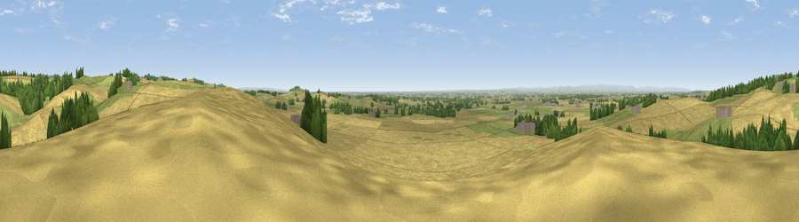

Viewpoint near Husthwaite
#12074 in England · top 29% of its area beats it · near HusthwaiteThe view, rendered

A 360° render of this exact spot computed from the terrain model, tree cover and land cover — summer colours, afternoon light, calibrated against photographs of famous viewpoints. Real trees, hedges and buildings will differ in detail.
The panorama
Grey silhouette: terrain skyline in each direction (720 bearings, Earth curvature and refraction included). Dashed green: skyline with trees (+15 m) and buildings (+8 m) as obstacles. Blue strip: how far the ground is visible on each bearing.
Where the view opens
Wedge length = distance to the farthest visible ground on that bearing (vegetation-aware). Rings at 10, 25 and 50 km.
What fills the view
67% cropland · 27% grassland · 6% woodland · 1% built-up
Angular shares of the visible panorama (visual magnitude), not map area. Landscape diversity 0.36 (0–1 Shannon).
Key numbers
More beautiful places nearby
The staircase of upgrades: each row has a higher view potential than everything closer. Driving times are estimates from straight-line distance, calibrated against real road routing — check an actual route before setting out.
| Place | Direction | Drive | Score |
|---|---|---|---|
| Viewpoint near Husthwaite | N · 1 km | ~4 min | 69.8 |
| Viewpoint near Oulston | E · 3 km | ~7 min | 70.4 |
| Snape Hill | NNW · 5 km | ~11 min | 71.8 |
| Viewpoint near Wass | NNE · 6 km | ~13 min | 72.6 |
| Hood Hill | NNW · 8 km | ~16 min | 79.6 |
| Viewpoint near Thirlby | N · 10 km | ~19 min | 81.5 |
| Beacon Hill | NNW · 27 km | ~43 min | 84.7 |
| Carlton Bank | N · 29 km | ~45 min | 85.1 |
54.15708, -1.19335 · source: screening · position refined by local search. Computed location — check access rights before visiting.